Architectural plan for a futures and commodities trading platform — energy, metals, agriculture, rates — built on the same operating system as the crypto platform (the envelope, the bus, the decoupled model→signal→book→strategy), but with a new futures domain on top: instruments, forward curves, margin, FIX, compliance, and fundamental modelling.
Do not extend the crypto platform. Build a new platform that reuses its core.
The envelope and ATLAS are market-agnostic. A packet is a packet — the bus does not know or care whether it carries a BTCUSDT depth tick or a Henry Hub natural-gas forward curve. That is precisely why the core carries over unchanged.
What must be new is everything above the bus: the instruments, the data, the models, the execution, the risk and the compliance. Futures are not crypto, and the differences are structural:
| Crypto (spot) | Futures |
|---|---|
| single asset, no expiry | an underlying + an expiry + a roll |
| one spot price | a forward curve and basis |
| perpetual funding | margin (initial/variation) and margin calls |
| unregulated, un-cleared | cleared, FIX, MiFID II / EMIR |
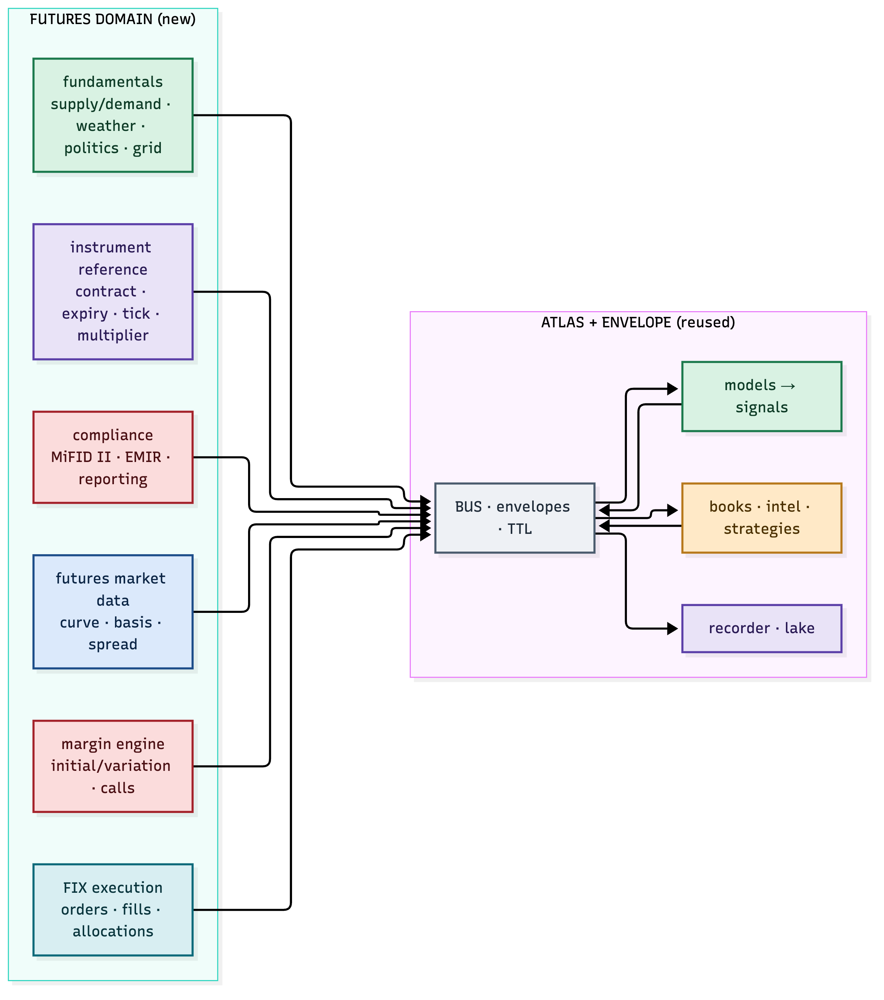
Figure 1.1 — the envelope/bus/model/book/lake core is reused; the futures domain is built new.
The crypto platform has five planes. The futures platform adds or reshapes them:
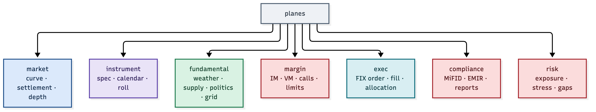
Figure 2.1 — market, instrument, fundamental, margin, exec, compliance, risk.
| Plane | What it carries | New or adapted |
|---|---|---|
market |
curve, settlement, depth, spread | adapted (curve, not spot) |
instrument |
contract spec, calendar, roll | new |
fundamental |
supply/demand, weather, politics, grid | new |
margin |
IM, VM, calls, limits | new |
exec |
FIX order, fill, allocation | new |
compliance |
MiFID II, EMIR, reports | new |
risk |
exposure, stress, gap | adapted |
Every one of these is a producer of envelopes on the same bus. The model, book and strategy layers subscribe exactly as they do today — they just consume futures data.
Futures cannot be traded without knowing what a contract is. The instrument domain is the single source of truth for every contract:
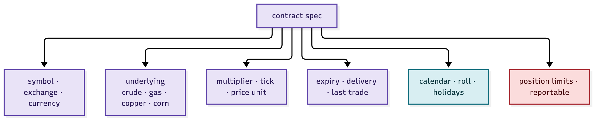
Figure 3.1 — symbol, underlying, multiplier, tick, expiry, calendar, limits.
| Field | Example | Why it matters |
|---|---|---|
| symbol / exchange | CL (CME), TTF (ICE), F (EEX) | the address of the contract |
| underlying | WTI crude, Dutch gas, copper | what you are actually exposed to |
| multiplier / tick | 1,000 bbl × $0.01 | the P&L per tick |
| expiry / delivery | M1 … M12, last trade date | when the contract rolls |
| calendar / roll | roll dates, holidays | how the curve is built and rolled |
| limits | position, reportable | regulatory + exchange caps |
The instrument domain is the reference data problem in miniature — and in a futures platform it is the foundation every other component keys off.
Futures price is not a single number. It is a curve: one price per delivery month. And the shape of that curve is itself the signal.
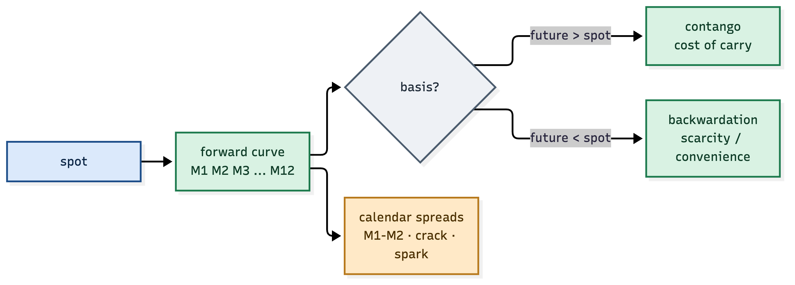
Figure 4.1 — contango and backwardation are the market's opinion of carry and scarcity.
| Term | Meaning |
|---|---|
| contango | futures above spot — cost of carry (storage, interest) |
| backwardation | futures below spot — scarcity or convenience yield |
| basis | future − spot |
| calendar spread | the price of one month vs the next (M1−M2) |
| crack / spark | refining / power-generation margins |
To work out the price — flat or forward — you must understand carry, storage, seasonality and the shape of the curve. That is the difference from crypto, and it is the whole game.
Trading futures bears risk: you post initial margin, you are marked to market daily (variation margin), and when the account falls below maintenance you get a margin call — top up or be liquidated.
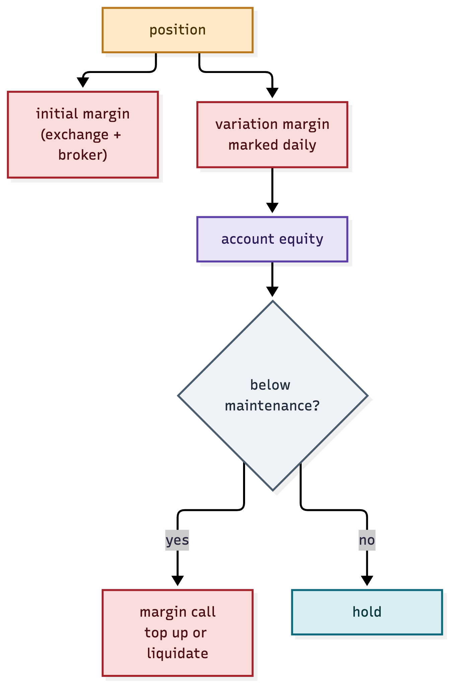
Figure 5.1 — initial margin, variation margin, and the margin call path.
| Margin | What it is |
|---|---|
| initial margin | posted to open a position |
| variation margin | the daily mark-to-market cash flow |
| maintenance | the floor before a call |
| margin call | the demand to top up or be closed |
The margin engine is a first-class producer on the bus: it publishes margin.state and
margin.call envelopes, and the risk governor refuses any order that would breach free
margin. In futures, the margin check happens before the order — not after.
Futures orders go to regulated venues (CME, ICE, EEX, LME) through brokers — and that is FIX. The exec plane speaks FIX 4.4:
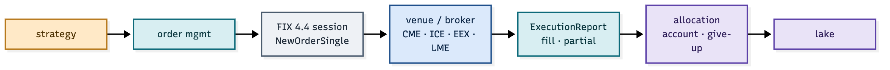
Figure 6.1 — NewOrderSingle → venue → ExecutionReport → allocation → lake.
| FIX message | Purpose |
|---|---|
NewOrderSingle (D) |
send an order |
ExecutionReport (8) |
acknowledge, partial, fill |
OrderCancelRequest (F) |
cancel |
| allocation | assign a fill to accounts (give-up) |
The FIX session is another envelope producer/consumer: every order, fill and allocation is a stamped packet on the bus, correlated to the strategy that generated it — so the audit trail from signal to fill is complete, exactly as in crypto.
Regulation is not optional. The futures platform must satisfy, at minimum:
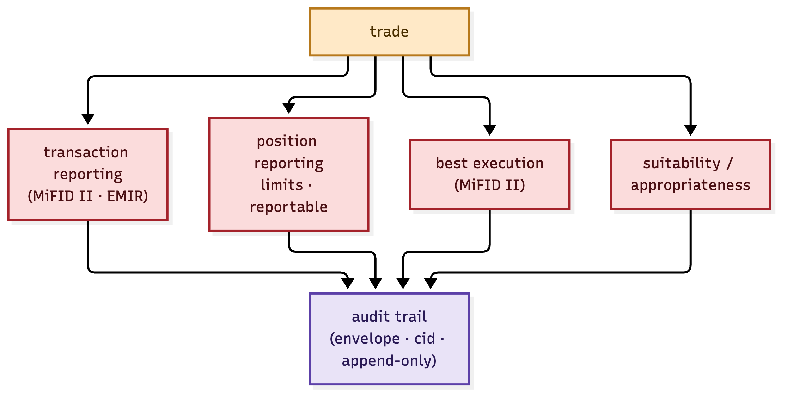
Figure 7.1 — transaction reporting, position reporting, best execution, suitability.
| Obligation | Regime | What it requires |
|---|---|---|
| transaction reporting | MiFID II / EMIR | report every trade, on time |
| position reporting | MiFID II / EMIR | report holdings past limits |
| best execution | MiFID II | prove you got the best price |
| suitability | MiFID II | know your client and their risk |
Because the envelope carries a correlation id and the lake is append-only, the compliance report is generated from the same evidence as the trading record — a report is a view over the lake, not a separately-maintained log. That is the envelope "having you covered".
The crypto models read order flow. The futures models must also read the world: supply and demand, weather, politics, and — for energy — the grid itself.
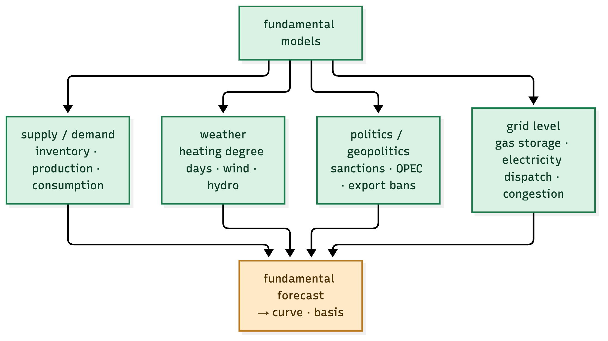
Figure 8.1 — supply/demand, weather, politics and grid feed the fundamental forecast.
| Fundamental | Drives | Example |
|---|---|---|
| supply / demand | inventory, production, consumption | EIA crude stocks, USDA WASDE |
| weather | heating/cooling demand, wind, hydro | HDD/CDD, wind forecast |
| politics | sanctions, OPEC, export bans | a pipeline sanction, an export tax |
| grid | dispatch, congestion, storage | gas storage %, power plant availability |
Energy, especially, is a systems problem: gas and electricity prices are set at the margin by the most expensive plant, on the most congested node, at the most extreme weather. Modelling that — down to the grid level — is a first-class model domain, publishing its forecast as an envelope the strategies consume.
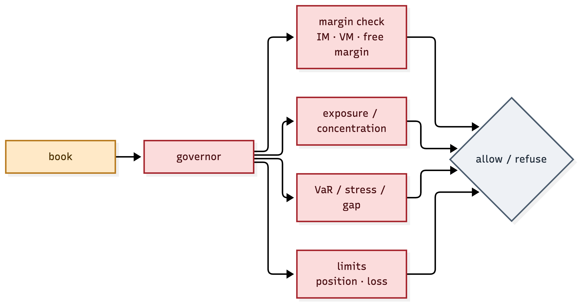
Figure 9.1 — margin, exposure, VaR/stress/gap and limits, all before an order.
| Check | Futures-specific |
|---|---|
| margin | free margin ≥ IM for the order |
| exposure | net and gross, per underlying and per curve bucket |
| stress / gap | what happens at expiry, or on a limit move |
| limits | exchange position limits, reportable thresholds |
The governor is the same idea as crypto — refuse with a rule and a number — but the rules are futures-grade: margin, concentration, and gap risk on delivery.
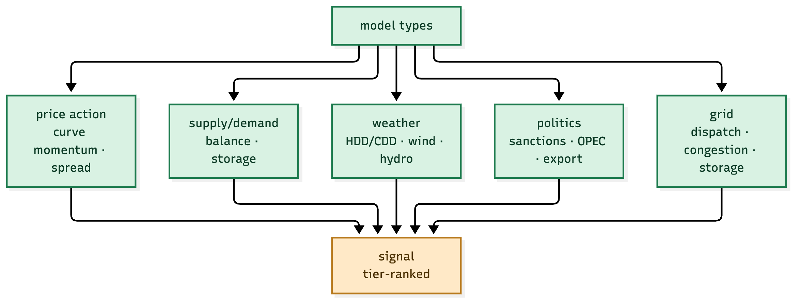
Figure 10.1 — price action, supply/demand, weather, politics, grid — each a pure signal producer.
| Model | Question |
|---|---|
| price action | is the curve trending, is the spread moving? |
| supply/demand | is the balance tightening or loosening? |
| weather | is demand or renewable supply shifting? |
| politics | is a supply shock forming? |
| grid | is the system at a stress point? |
Each is a calculation agent — a pure function of its inputs, publishing a signal with an epoch timestamp. The book accumulates them in its intel window and confirms a pattern before a strategy trades. Advisory, systematic and auto are just three strategies over the same signals.
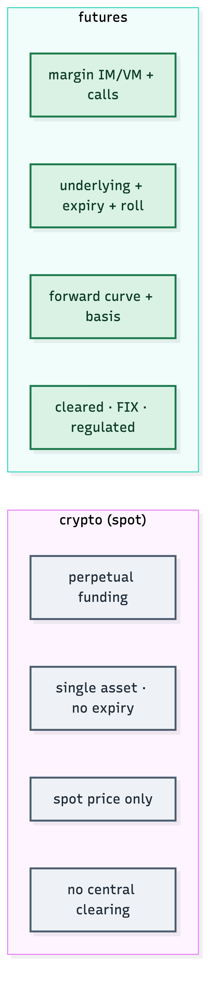
Figure 11.1 — spot vs forward: expiry, curve, margin, clearing.
The one line that matters: crypto trades an asset; futures trade a curve of commitments — and everything new in this platform (instrument, margin, FIX, compliance, fundamentals) exists because of that difference.
| Phase | What | Depends on |
|---|---|---|
| 1 · Core reuse | fork the envelope/bus/model/book/lake core | — |
| 2 · Instrument + curve | reference data, forward curve, basis | 1 |
| 3 · Market data | venue feeds (CME, ICE, EEX, LME) | 1, 2 |
| 4 · Margin + risk | margin engine, governor | 2, 3 |
| 5 · Execution | FIX 4.4 session, order/fill/allocation | 3, 4 |
| 6 · Compliance | MiFID II / EMIR reporting | 5 |
| 7 · Fundamentals | supply/demand, weather, politics, grid | 2 |
| 8 · Strategies | advisory → systematic → auto | 4, 7 |
Each phase ships envelopes on the same bus, so the platform is observable and auditable at every step — which is the entire point of ATLAS and the envelope.
The futures platform is the same operating system, a different market. Reuse the envelope, the bus, the decoupled model→signal→book→strategy, the intel window and the lake. Build new: instruments, forward curves, margin, FIX, compliance and fundamental modelling. The envelope covers the how; the futures domain is the what.